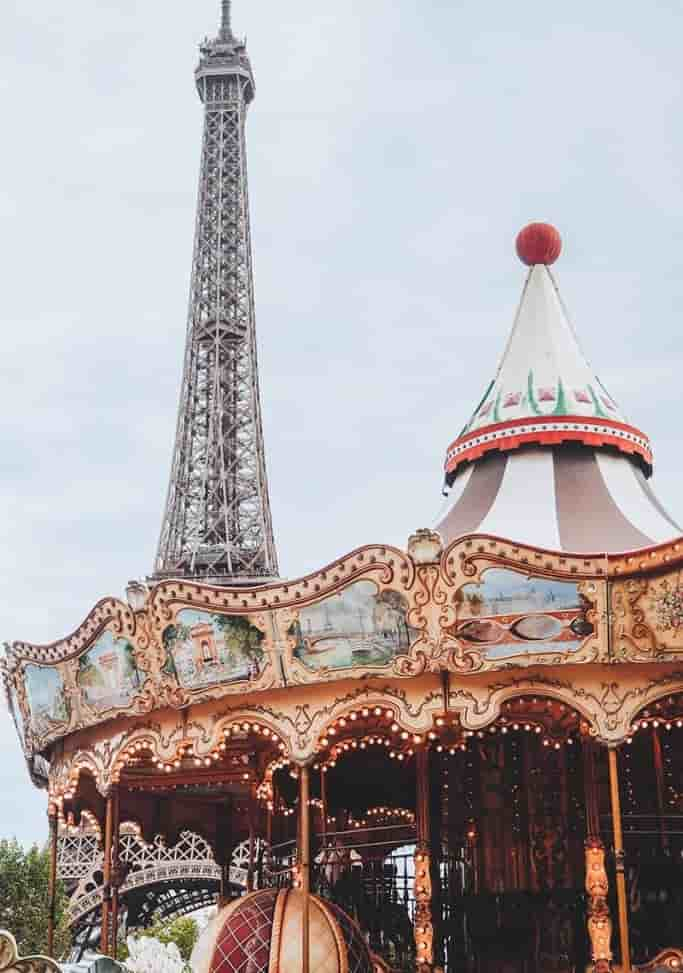
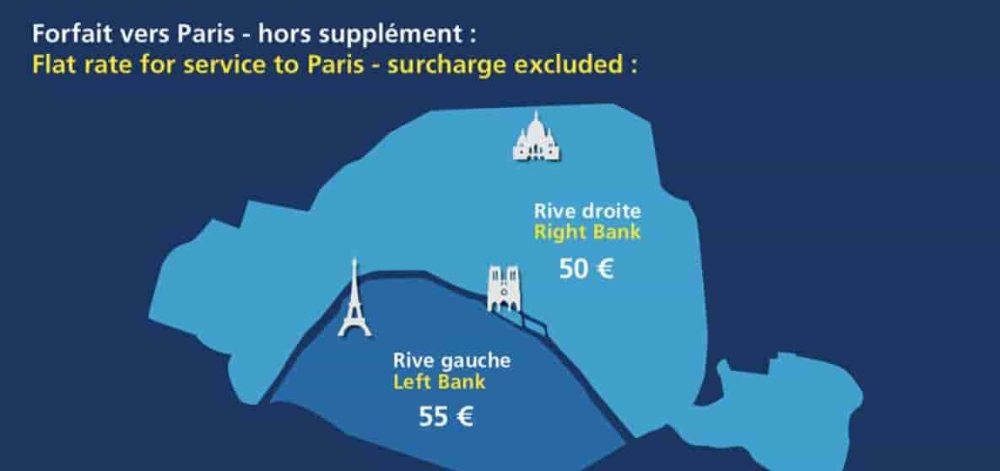
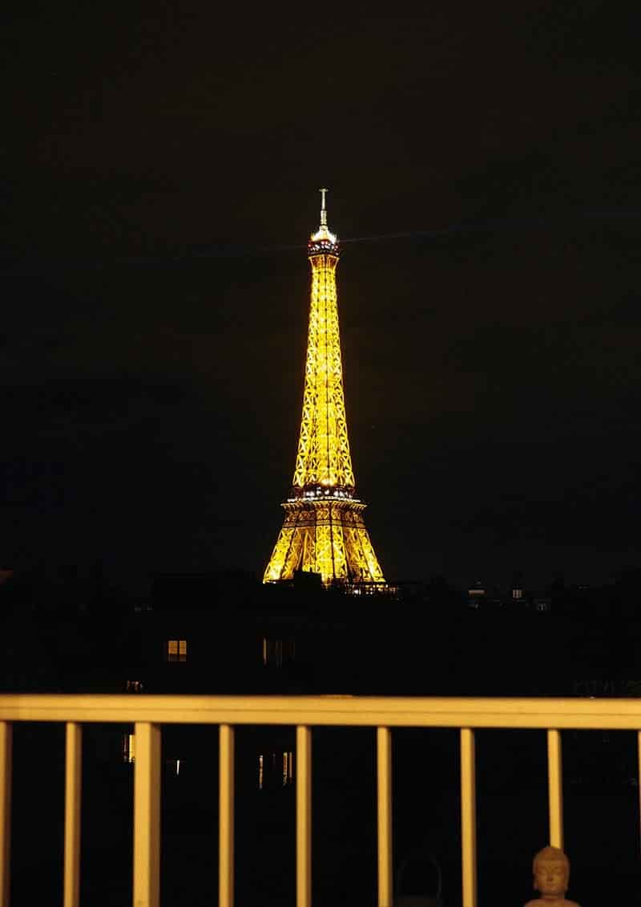

Đăng ngày: 10/10/2021
Để chốt lại loạt bài về Paris đang ngập tràn trên Blog du lịch của mình mấy bữa nay, đây là biên tổng hợp toàn bộ kinh nghiệm du lịch Paris tự túc từ A tới Z. Bài này tổng hợp không chỉ những kinh nghiệm du lịch Paris do chính bản thân mình trải nghiệm, mà còn là một bài tập hợp tất cả những nguồn thông tin mà tôi tìm hiểu, tham khảo và áp dụng cho chuyến đi Paris của gia đình vào đầu tháng 09/2019 vừa rồi. Mời bạn tham khảo nhé!
Paris có ba sân bay, bao gồm sân bay quốc tế lớn nhất là Charles de Gaulle (CDG), Orly (ORY) và Beauvais (BVA). CDG và ORY là hai sân bay lớn, chuyên đón những chuyến bay quốc tế đường dài từ khắp nơi trên thế giới. Nhưng thường đa phần nếu bay từ Việt Nam thì mọi người hay tới CDG nhiều hơn. Còn BVA là sân bay chủ yếu tập trung các hãng hàng không giá rẻ nội vùng châu Âu.
Có ba cách: Taxi, tàu RER và xe bus.
Taxi sân bay CDG hiện đã có giá cố định: €55/lượt đối với khu vực Rive Gauche (tả ngạn sông Seine) và €50/lượt với Rive Droite (hữu ngạn sông Seine).
Khi đặt khách sạn, bạn canh vô vị trí trong bản đồ là có thể biết được mình cần đi về hữu ngạn (gauche) hay tả ngạn (droite). Hữu ngạn và tả ngạn được phân chia như trong hình phía dưới.
Từ sân bay đi ra, bạn chỉ việc đi theo mũi tên có chữ taxi. Tuy nhiên lần mới đây nhất, khi ra tới cổng đón taxi rồi thì gia đình tôi bị tay nhân viên “móc nối” với bọn “cò” kéo ra ngoài, dụ khị đi taxi “lụi” với giá €183 cho 3 người.
Bọn này chắc nhìn thấy châu Á tưởng ngáo ngơ, ai ngờ gặp giang hồ Quận 4 thứ thiệt (Quận 4 Sài Gòn chứ không phải Quận 4 Paris nha) nên còn lâu giang hồ mới bị dụ!!!
Kinh nghiệm của mình đó là bạn cứ lơ tay nhân viên đi, ra tới ngay chỗ chờ taxi của sân bay, và chỉ đón những chiếc taxi có gắn hộp đèn Taxi đàng hoàng phía trên. Từ Paris muốn đón taxi ra sân bay thì có thể nhờ nhân viên khách sạn hoặc host gọi điện, hoặc ra khu vực chờ taxi (giống khu chờ xe bus vậy) mà đợi.
Ngoài ra, một lời khuyên từ kinh nghiệm thực tế của mình đó là, nếu bạn bay từ Việt Nam qua và đi nhóm khoảng 3 – 4 người, hãy mạnh dạn đi taxi. Tính ra mỗi người trả khoảng trên dưới €15 mà về tới trung tâm khỏe re, khỏi lo hành lý cồng kềnh, trộm cắp móc túi.
Tôi có cậu bạn đang làm PhD ở Thụy Điển. Cách đây mấy tháng bạn đi Paris để dự hội thảo, và hỡi ôi, chỉ vừa từ sân bay lên đến RER để về khách sạn thôi mà bọn xấu đã kịp thuổng luôn cái laptop, trong đó toàn bộ là tài liệu dự hội thảo cũng như tài liệu chuyên ngành PhD của bạn mấy năm trời!!! Mất đồ một cú “quá mạng“, còn khổ sở vật vã hơn mất tiền mặt, thậm chí mất giấy tờ nhiều!
Nếu muốn tiết kiệm, bạn có thể chọn cách đi tàu RER B hoặc đi xe bus.
Hiện nay, vé Ticket Mobilis đã có thể kết hợp với tàu RER B/Roissybus/Orlybus để đến CDG và Orly. Để dùng vé này tới sân bay thì bạn phải mua loại có hiệu lực 5 zones (bao gồm luôn cả Disney và Versailles luôn). Thông tin chi tiết mời bạn tham khảo thêm tại TRANG NÀY (kéo xuống phần Ticket Mobilis Prices).
Đi tàu RER này có hơi bất tiện đó là nó chỉ có ở Terminal 3 và bạn phải bắt một lượt shuttle bus để tới đây. Mà éo le thêm nữa là thứ tự sắp xếp terminal ở CDG là T1 – T3 – T2, thay vì 123 như bình thường. Vì vậy, một lần nữa, lời khuyên chân thành của mình đó là… mời bạn đi taxi cho lẹ!
Cuối cùng là xe bus. Có 2 loại bus là city bus – xe bus thành phố thông thường, dừng ở tất cả các trạm nên thời gian đi khá lâu nhưng giá rẻ & shuttle bus sân bay – chỉ dừng ở một số trạm cũ thể, thời gian đi nhanh hơn và giá cũng cao hơn. Kỳ này gia đình mình không đi bus nên không nắm chi tiết. Bạn có thể tham khảo cụ thể hơn tại ĐÂY.
Tương tự như CDG, từ ORY về trung tâm Paris cũng có 3 cách là taxi (giá fix €30 hoặc €35/lượt tùy theo khu vực), xe lửa và xe bus. Bạn có thể tham khảo chi tiết thông tin, giá vé, thời gian di chuyển của các loại phương tiện này tại ĐÂY.
Tôi đã từng tới sân bay Beauvais này vào năm 2015, và thề là không bao giờ tin lời mấy hãng hàng không giá rẻ mà đáp xuống BVA một lần nào nữa. Sân bay quá xa trung tâm, nội thời gian di chuyển không thôi cũng hết hơi, chưa kể bạn phải tính thêm tiền di chuyển từ sân bay tới trung tâm và ngược lại nữa. Cộng mấy thứ linh tinh đó vô, vé “rẻ không tưởng” tự nhiên thành… “tưởng là rẻ” ai ngờ…
Cách đơn giản nhất là đi shuttle bus từ BVA vô tới Porte Malot, rồi từ đó sử dụng phương tiện công cộng để đi tiếp vô trung tâm Paris. Bạn có thể đặt vé shuttle bus online trước để giữ chỗ và được vé rẻ hơn so với mua trực tiếp tại trạm.
Riêng về di chuyển trong trung tâm Paris, mời bạn tham khảo bài viết “Tổng hợp về phương tiện đi lại ở Paris” do Blog du lịch của mình hợp tác nội dung với O’bon Paris – trang thông tin du lịch Paris chuẩn và đầy đủ nhất mà tôi thường hay tham khảo.
Kinh nghiệm của mình: Nếu xác định chỉ tham quan các địa điểm chính ở trung tâm Paris, bạn chỉ cần mua vé zone 1 – 2 là đủ. Ngoài ra còn một lưu ý đó là khái niệm “vé ngày” ở đây là đúng một ngày, tới 12h đêm là hết hiệu lực chứ không phải theo kiểu 24h như mọi người thường nghĩ.
Nếu bạn xác định có thể đi bộ hoặc không di chuyển nhiều hoặc chỉ đi toàn bộ ở trung tâm thành phố thì nên mua vé t+ (10 vé) cho tiện. Tuy nhiên nếu ở Paris từ 2 ngày trở lên thì bạn nên cân nhắc mua các loại vé ngày sẽ lợi hơn
Paris là thành phố du lịch nổi tiếng nhất châu Âu hiện nay rồi nên bạn không phải lo là không có chỗ ở. Cái cần lo là tìm được chỗ ở hợp lý, vừa túi tiền, khu vực an ninh, tránh xa các khu nhập cư phức tạp, v.v…
Để đặt phòng khách sạn thì tốt nhất là đặt qua Booking.com. Đây cũng là một trong số những trang web đặt phòng uy tín khi làm thủ tục xin visa du lịch trong khối Schengen.
Nhìn vào bản đồ đặt phòng dưới đây, bạn có thể dễ dàng tìm được loại phòng mình mong muốn dựa vào vị trí và giá phòng được niêm yết sẵn luôn ở đây nhé!
Bên cạnh Booking thì bạn có hai sự lựa chọn khác đó là host người Việt ở Paris và Airbnb. Nếu may mắn, bạn có thể book được căn Airbnb này với view nhìn ra tháp Eiffel (hình dưới) với giá chỉ khoảng €80/người/đêm.
Đồng hành cùng với du lịch là combo móc túi/dàn cảnh/cướp giật/ăn xin/xin chữ ký/v.v… Đây là vấn nạn nhức não ở các thành phố lớn khác ở châu Âu như Barcelona, Roma, Venice chứ không riêng gì Paris xinh đẹp.
Từ những gợi ý căn bản này, tùy thuộc vào thời gian và sở thích mà bạn có thể sắp xếp các điểm tham quan cũng như các hoạt động trong ngày khác sao cho phù hợp Nếu không có nhiều thời gian thì… cứ yên tâm, bạn vẫn có thể tham quan trọn vẹn những nơi này trong vòng 2 ngày!
Bảo tàng Louvre với kim tự tháp bằng kính được thắp sáng rực rỡ trong đêm nè. Nếu muốn chụp được như vầy, bắt buộc bạn phải có tripod hoặc bét lắm là để tựa máy lên bờ tường quanh hồ nước rồi mới chụp phơi sáng được nha.
Trước chuyến đi kỳ này, mình đã tham khảo khoảng trên dưới 30 chiếc website du lịch và blog cá nhân khác nhau để tìm ra lịch trình du lịch Paris phù hợp nhất cho 2 ngày và đi với người lớn tuổi. Sở dĩ phải tham khảo một lượng thông tin nhiều như vậy là vì blogger du lịch viết về Paris thì không thiếu, nhưng blogger viết về kinh nghiệm du lịch Paris 2 ngày với người lớn tuổi thì… chắc chỉ có mình, hehe! Bởi vậy phải chắt lọc thông tin dữ lắm mới ra được cái lịch trình như ý muốn.
Có rất nhiều thông tin du lịch hay ho mà mình không hoặc chưa sử dụng tới, nhân tiện biên hết ra đây để bạn tiện tra cứu và tham khảo thêm khi cần nghen!
Đây là cầu Bir-Hakeim. Tuyến metro số 6 đoạn giữa Bir-Hakeim và Trocadero sẽ có view từ cửa sổ toa tàu ra tháp Eiffel cực kỳ đẹp!
Thường tại các bistrot, giá một menu cố định 3 món (khai vị, món chính, tráng miệng) là khoảng từ €17/người. Ở nhà hàng (restaurant) thì phải từ €27/người trở lên, tùy độ sang chảnh của nhà hàng cũng như món ăn mà bạn gọi.
Lưu ý: Nếu muốn uống nước trắng, hãy gọi tap water (nước vòi) để được nhà hàng phục vụ nước miễn phí. Nếu bạn chỉ kêu water không thôi, họ sẽ bưng ra nước đóng chai và tính thêm tiền nước nữa đó nha.
TRỌN BỘ KINH NGHIỆM DU LỊCH PARIS CỦA MÌNH ĐẾN ĐÂY LÀ HẾT. HY VỌNG BÀI BIÊN NÀY CUNG CẤP CHO BẠN NHỮNG THÔNG TIN CĂN BẢN VÀ HỮU ÍCH NHẤT ĐỂ CHUẨN BỊ CHO CHUYẾN ĐI PARIS SẮP TỚI CỦA MÌNH!
CHÚC BẠN CÓ MỘT CHUYẾN ĐI TỚI KINH ĐÔ ÁNH SÁNG THẬT NHIỀU NIỀM VUI VÀ KỶ NIỆM ĐẸP!
Bình luận
19/08/2022 19:55
Bài viết hứu ích!
Thêm bình luận